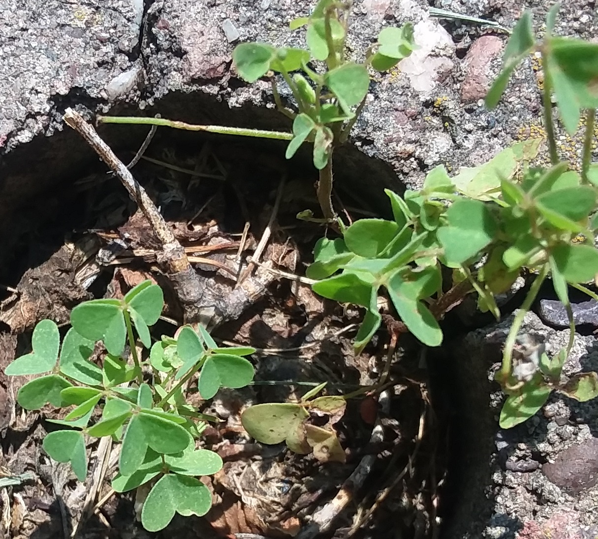

Find the next lock near where this picture was taken! 
Once there look for clues in the area to find the next key. You'll have to look hard for the clues. Leave no stone unturned in your quest!
Use the key to rescue your Dig'em Up.